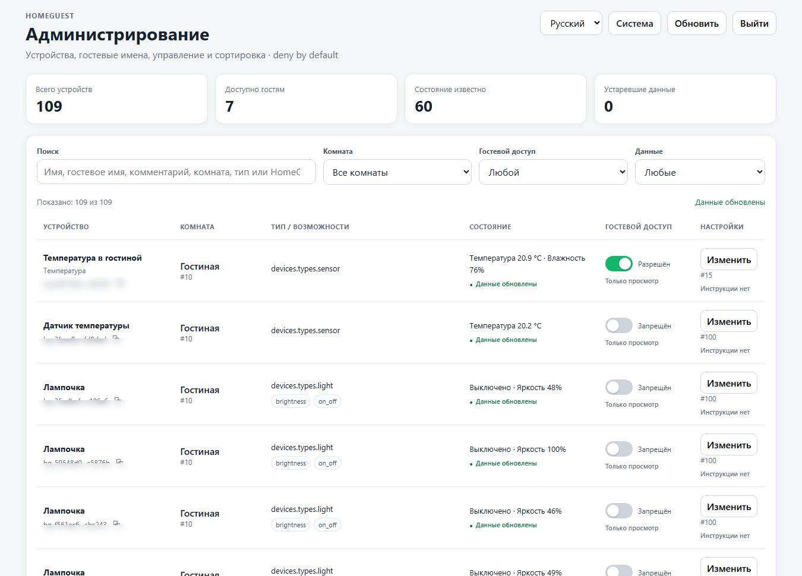

Инструкции под рукой
Текст, изображения и ссылки по комнатам и оборудованию. Правила дома — на той же странице.
ВАШ ДОМ. ВАШИ ПРАВИЛА.
Как включить свет, где найти пульт, какая температура в комнате — одна страница отвечает на привычные вопросы.
Открывается в браузере. Работает в домашней сети.
Всё, что нужно для комфортного отдыха.
Локальная страница дома
Только разрешённые устройства
Телефон, планшет, компьютер
01 / ВОЗМОЖНОСТИ
Соберите знания о доме в одном месте.
Дайте гостям ровно столько доступа, сколько нужно.
Текст, изображения и ссылки по комнатам и оборудованию. Правила дома — на той же странице.
Состояние выбранных устройств, управление светом и гостевые сценарии с несколькими действиями.
Температура и влажность с подключённых датчиков. Понятные названия и комментарии владельца.
Произвольные комнаты и устройства, даже без Yandex. Удобная структура для конкретного дома.
Гость подключается к Wi-Fi и открывает страницу по ссылке или QR-коду. Приложение устанавливать не нужно.
Отдельная админ-панель, выбор доступных устройств, резервные копии, диагностика и откат обновлений.
02 / ПОЧУВСТВУЙТЕ СЕБЯ ГОСТЕМ
Попробуйте, как устроен HomeGuest.
Все действия в этом демо — виртуальные.
ВЫ РЕШАЕТЕ, ЧТО ВИДНО ГОСТЮ
HomeGuest разделяет гостевую страницу и настройки владельца. Для каждого устройства вы выбираете видимость и разрешение на управление.

03 / ЗАПУСК
Выберите, где будет работать HomeGuest.
Инструкция ниже подстроится под ваш выбор.
Инструкции основаны на документации HomeGuest 0.4.0. Матрица совместимости ↗
ЕЩЁ ПАРА ДЕТАЛЕЙ
Для гостевой страницы отдельный аккаунт не нужен. Интеграцию с Yandex настраивает владелец дома в административной части HomeGuest.
Локальные инструкции и страница дома доступны в домашней сети. Для состояния и управления устройствами через Yandex, а также голосовых сообщений нужен доступ HomeGuest к сервисам Яндекса.
Entware / OPKG, постоянное хранилище /opt, SSH и архитектура Linux MIPSLE softfloat. Не каждая модель подходит: проверьте архитектуру до установки. Гостевой Wi-Fi должен разрешать доступ к адресу и порту HomeGuest.
Публичная версия 0.4.0 находится в beta-тестировании. Перед обновлением сделайте резервную копию. Пакеты и актуальные статусы платформ опубликованы в Releases.